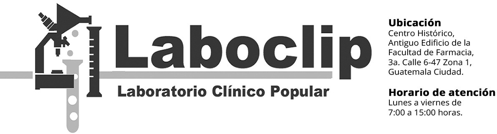

Artículo 3 ¿Qué debes tomar en cuenta al aprender a programar?
Ludwin Eduardo Escobar Flores
ludwin24@gmail.com
Palabras Clave: lógica de programación, lenguajes de programación, programar.
A pesar de que en este tiempo se escucha que las tendencias de las carreras basadas en el manejo de los sistemas informáticos están en una etapa de gran desarrollo, también, es común escuchar frases como “yo no entiendo nada de programación” o “eso de la informática no entra en mi cabeza”. La programación y el desarrollo de aplicaciones se convierten en un gran campo de oportunidades y si quieres tener éxito en esta área puedes tomar en cuenta estos principios.
{kind=link}
Fuente: jlaya.com
No necesitas ser un erudito o tener un coeficiente intelectual alto para poder programar y desarrollar soluciones a problemas reales. Cualquier persona puede programar, solo necesitas tener tu mente abierta y prestar atención a los pequeños detalles. Según su definición un programa es “un conjunto unitario de instrucciones que permite a una computadora realizar funciones diversas, como el tratamiento de textos, el diseño de gráficos, la resolución de problemas matemáticos, el manejo de bancos de datos, etc.”. Entonces, si hablamos de un conjunto de instrucciones que deben seguirse con un orden específico para obtener el resultado deseado, es necesario pensar en los detalles pequeños. Por ejemplo, piensa en los pasos que debes seguir para tomar agua en un vaso... ¿Pensaste en la ruta desde donde estas hasta el lugar donde están los vasos y el agua?
¿Pensaste que debes abrir los dedos de tu mano, acercar tu mano al vaso y volverla a cerrar con la fuerza justa para sujetar el vaso, pero no tan fuerte como para romperlo? Además, ¿Pensaste que debes aguantar la respiración al tomar agua o que debes hacer pausas para respirar si quieres tomar toda el agua contenida por el vaso?
Hay pequeñas cosas que se hacen automáticamente en cada actividad, pero, al programar no se puede suponer nada, se debe pensar cuidadosamente en cada uno de los pasos que hay que seguir.
También, es muy común cerrarnos en una idea, cuando creemos haber ideado una magnífica solución es difícil pensar que esa solución pueda tener algo malo y generalmente nos empeñamos en pensar que es la mejor y única solución, aunque es posible que exista una solución más sencilla e igual de eficaz no debes cerrarte, es necesario analizar las posibles soluciones en busca de la mejor ya que se puede lograr el mismo objetivo de diferentes maneras, depende de ti encontrar la que se adecue mejor a la situación.
{kind=link}
Fuente: udemy-images.udemy.com
Otro aspecto importante al comenzar a programar es que debes ser autodidacta, seguir aprendiendo y practicando, cada día aparecen nuevos lenguajes, frameworks y herramientas para el área del desarrollo, no puedes quedarte atrás y perderte las nuevas tecnologías, después de todo, una vez que dominas la lógica para programar, adaptarte a las nuevas u otras tecnologías será muy fácil.
Al aprender a programar debes asegurarte de aprender las bases y los cimientos, debes manejar las sentencias y estructuras de datos básicas, con la experiencia irás agregando conocimiento que te ayudará a crear mejores soluciones. El camino del aprendizaje puede ser difícil en ocasiones, pero, no debes rendirte ni desanimarte cuando tu solución no funcione como quisieras, a veces solo necesitas parar por un momento, respirar y ver el problema desde otro ángulo que te permita descubrir una solución diferente.
Y por último, todo programador requiere pasión, no es fácil estar horas y horas frente a un computador escribiendo líneas de código, así que si no amas lo que haces, hacer los proyectos solo te parecerá una tarea larga y tediosa. Al programar te darás cuenta de las cosas que puedes lograr y como las instrucciones de programación que tú escribes pueden convertirse en la solución a los problemas ajenos y propios. Puedes crear toda clase de software, concretar ideas y pensamientos en soluciones reales, en ese punto sabrás que todo tu esfuerzo ha valido la pena.
{kind=link}
Fuente: zynco.es
Conclusiones
El éxito en la programación no solo se basa en que tanto conocimiento se tiene sobre un lenguaje de programación, un buen programador se distingue por la calidad de sus soluciones y por poner en práctica los principios básicos de programación.
Podes cambiar tu entorno con la actitud que muestres al momento de resolver problemas.
Todo programador debe tener una mente abierta al buscar soluciones, ser creativo y analizar cada detalle del proceso que se necesite diseñar.
Aprendé siempre de cualquier experiencia que te pase en el trabajo, ya sea que la podas aplicar a tu vida personal o profesional.
Para que las soluciones que desarrollamos sean modernas debemos mantenernos actualizados y sobre todo ser perseverante, los mejores programadores se forman en base a experiencia ganada tras mucha práctica.
Referencias
Real academia español. Recuperado de: dle.rae.es (27/8/2017).
EUGENIO DUARTE, Tips para aprender a programar. Recuperado de:
blog.capacityacademy.com (27/8/2017).
